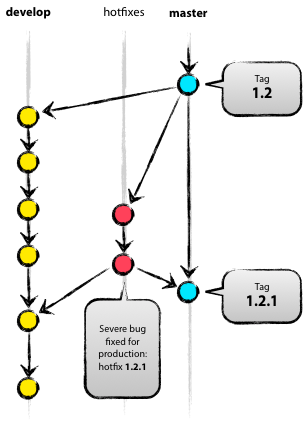

A successful Git branching model
http://nvie.com/posts/a-successful-git-branching-model/
Published: January 05, 2010
In this post I present the development model that I’ve introduced for all of my projects (both at work and private) about a year ago, and which has turned out to be very successful. I’ve been meaning to write about it for a while now, but I’ve never really found the time to do so thoroughly, until now. I won’t talk about any of the projects’ details, merely about the branching strategy and release management.

It focuses around Git as the tool for the versioning of all of our source code.
Why git?
For a thorough discussion on the pros and cons of Git compared to centralized source code control systems, see the web. There are plenty of flame wars going on there. As a developer, I prefer Git above all other tools around today. Git really changed the way developers think of merging and branching. From the classic CVS/Subversion world I came from, merging/branching has always been considered a bit scary (“beware of merge conflicts, they bite you!”) and something you only do every once in a while.
But with Git, these actions are extremely cheap and simple, and they are considered one of the core parts of your daily workflow, really. For example, in CVS/Subversion books, branching and merging is first discussed in the later chapters (for advanced users), while in every Git book, it’s already covered in chapter 3 (basics).
As a consequence of its simplicity and repetitive nature, branching and merging are no longer something to be afraid of. Version control tools are supposed to assist in branching/merging more than anything else.
Enough about the tools, let’s head onto the development model. The model that I’m going to present here is essentially no more than a set of procedures that every team member has to follow in order to come to a managed software development process.
Decentralized but centralized
The repository setup that we use and that works well with this branching model,
is that with a central “truth” repo. Note that this repo is only considered
to be the central one (since Git is a DVCS, there is no such thing as a central
repo at a technical level). We will refer to this repo as origin, since this
name is familiar to all Git users.

Each developer pulls and pushes to origin. But besides the centralized
push-pull relationships, each developer may also pull changes from other peers
to form sub teams. For example, this might be useful to work together with two
or more developers on a big new feature, before pushing the work in progress to
origin prematurely. In the figure above, there are subteams of Alice and Bob,
Alice and David, and Clair and David.
Technically, this means nothing more than that Alice has defined a Git remote,
named bob, pointing to Bob’s repository, and vice versa.
The main branches

At the core, the development model is greatly inspired by existing models out there. The central repo holds two main branches with an infinite lifetime:
masterdevelop
The master branch at origin should be familiar to every Git user. Parallel
to the master branch, another branch exists called develop.
We consider origin/master to be the main branch where the source code of
HEAD always reflects a production-ready state.
We consider origin/develop to be the main branch where the source code of
HEAD always reflects a state with the latest delivered development changes
for the next release. Some would call this the “integration branch”. This is
where any automatic nightly builds are built from.
When the source code in the develop branch reaches a stable point and is
ready to be released, all of the changes should be merged back into master
somehow and then tagged with a release number. How this is done in detail will
be discussed further on.
Therefore, each time when changes are merged back into master, this is a new
production release by definition. We tend to be very strict at this, so that
theoretically, we could use a Git hook script to automatically build and
roll-out our software to our production servers everytime there was a commit on
master.
Supporting branches
Next to the main branches master and develop, our development model uses a
variety of supporting branches to aid parallel development between team
members, ease tracking of features, prepare for production releases and to
assist in quickly fixing live production problems. Unlike the main branches,
these branches always have a limited life time, since they will be removed
eventually.
The different types of branches we may use are:
- Feature branches
- Release branches
- Hotfix branches
Each of these branches have a specific purpose and are bound to strict rules as to which branches may be their originating branch and which branches must be their merge targets. We will walk through them in a minute.
By no means are these branches “special” from a technical perspective. The branch types are categorized by how we use them. They are of course plain old Git branches.
Feature branches

May branch off from: develop
Must merge back into: develop
Branch naming convention: anything except master, develop, release-*,
or hotfix-*
Feature branches (or sometimes called topic branches) are used to develop new
features for the upcoming or a distant future release. When starting
development of a feature, the target release in which this feature will be
incorporated may well be unknown at that point. The essence of a feature branch
is that it exists as long as the feature is in development, but will eventually
be merged back into develop (to definitely add the new feature to the
upcoming release) or discarded (in case of a disappointing experiment).
Feature branches typically exist in developer repos only, not in origin.
Creating a feature branch
When starting work on a new feature, branch off from the develop branch.
$ git checkout -b myfeature develop
Switched to a new branch "myfeature"Incorporating a finished feature on develop
Finished features may be merged into the develop branch definitely add them
to the upcoming release:
$ git checkout develop
Switched to branch 'develop'
$ git merge --no-ff myfeature
Updating ea1b82a..05e9557
(Summary of changes)
$ git branch -d myfeature
Deleted branch myfeature (was 05e9557).
$ git push origin developThe --no-ff flag causes the merge to always create a new commit object, even
if the merge could be performed with a fast-forward. This avoids losing
information about the historical existence of a feature branch and groups
together all commits that together added the feature. Compare:

In the latter case, it is impossible to see from the Git history which of the
commit objects together have implemented a feature—you would have to manually
read all the log messages. Reverting a whole feature (i.e. a group of commits),
is a true headache in the latter situation, whereas it is easily done if the
--no-ff flag was used.
Yes, it will create a few more (empty) commit objects, but the gain is much bigger that that cost.
Unfortunately, I have not found a way to make --no-ff the default behaviour
of git merge yet, but it really should be.
Release branches
May branch off from: develop
Must merge back into: develop and master
Branch naming convention: release-*
Release branches support preparation of a new production release. They allow
for last-minute dotting of i’s and crossing t’s. Furthermore, they allow for
minor bug fixes and preparing meta-data for a release (version number, build
dates, etc.). By doing all of this work on a release branch, the develop
branch is cleared to receive features for the next big release.
The key moment to branch off a new release branch from develop is when
develop (almost) reflects the desired state of the new release. At least all
features that are targeted for the release-to-be-built must be merged in to
develop at this point in time. All features targeted at future releases may
not—they must wait until after the release branch is branched off.
It is exactly at the start of a release branch that the upcoming release gets
assigned a version number—not any earlier. Up until that moment, the develop
branch reflected changes for the “next release”, but it is unclear whether that
“next release” will eventually become 0.3 or 1.0, until the release branch is
started. That decision is made on the start of the release branch and is
carried out by the project’s rules on version number bumping.
Creating a release branch
Release branches are created from the develop branch. For example, say
version 1.1.5 is the current production release and we have a big release
coming up. The state of develop is ready for the “next release” and we have
decided that this will become version 1.2 (rather than 1.1.6 or 2.0). So we
branch off and give the release branch a name reflecting the new version
number:
$ git checkout -b release-1.2 develop
Switched to a new branch "release-1.2"
$ ./bump-version.sh 1.2
Files modified successfully, version bumped to 1.2.
$ git commit -a -m "Bumped version number to 1.2"
[release-1.2 74d9424] Bumped version number to 1.2
1 files changed, 1 insertions(+), 1 deletions(-)After creating a new branch and switching to it, we bump the version number.
Here, bump-version.sh is a fictional shell script that changes some files
in the working copy to reflect the new version. (This can of course be a manual
change—the point being that some files change.) Then, the bumped version
number is committed.
This new branch may exist there for a while, until the release may be rolled
out definitely. During that time, bug fixes may be applied in this branch
(rather than on the develop branch). Adding large new features here is
strictly prohibited. They must be merged into develop, and therefore, wait
for the next big release.
Finishing a release branch
When the state of the release branch is ready to become a real release, some
actions need to be carried out. First, the release branch is merged into
master (since every commit on master is a new release by definition,
remember). Next, that commit on master must be tagged for easy future
reference to this historical version. Finally, the changes made on the release
branch need to be merged back into develop, so that future releases also
contain these bug fixes.
The first two steps in Git:
$ git checkout master
Switched to branch 'master'
$ git merge --no-ff release-1.2
Merge made by recursive.
(Summary of changes)
$ git tag -a 1.2The release is now done, and tagged for future reference.
Edit: You might as well want to use the -s or -u <key> flags to sign
your tag cryptographically.
To keep the changes made in the release branch, we need to merge those back
into develop, though. In Git:
$ git checkout develop
Switched to branch 'develop'
$ git merge --no-ff release-1.2
Merge made by recursive.
(Summary of changes)This step may well lead to a merge conflict (probably even, since we have changed the version number). If so, fix it and commit.
Now we are really done and the release branch may be removed, since we don’t need it anymore:
$ git branch -d release-1.2
Deleted branch release-1.2 (was ff452fe).Hotfix branches

May branch off from: master
Must merge back into: develop and master
Branch naming convention: hotfix-*
Hotfix branches are very much like release branches in that they are also meant to prepare for a new production release, albeit unplanned. They arise from the necessity to act immediately upon an undesired state of a live production version. When a critical bug in a production version must be resolved immediately, a hotfix branch may be branched off from the corresponding tag on the master branch that marks the production version.
The essence is that work of team members (on the develop branch) can
continue, while another person is preparing a quick production fix.
Creating the hotfix branch
Hotfix branches are created from the master branch. For example, say
version 1.2 is the current production release running live and causing troubles
due to a severe bug. But changes on develop are yet unstable. We may then
branch off a hotfix branch and start fixing the problem:
$ git checkout -b hotfix-1.2.1 master
Switched to a new branch "hotfix-1.2.1"
$ ./bump-version.sh 1.2.1
Files modified successfully, version bumped to 1.2.1.
$ git commit -a -m "Bumped version number to 1.2.1"
[hotfix-1.2.1 41e61bb] Bumped version number to 1.2.1
1 files changed, 1 insertions(+), 1 deletions(-)Don’t forget to bump the version number after branching off!
Then, fix the bug and commit the fix in one or more separate commits.
$ git commit -m "Fixed severe production problem"
[hotfix-1.2.1 abbe5d6] Fixed severe production problem
5 files changed, 32 insertions(+), 17 deletions(-)Finishing a hotfix branch
When finished, the bugfix needs to be merged back into master, but also needs
to be merged back into develop, in order to safeguard that the bugfix is
included in the next release as well. This is completely similar to how release
branches are finished.
First, update master and tag the release.
$ git checkout master
Switched to branch 'master'
$ git merge --no-ff hotfix-1.2.1
Merge made by recursive.
(Summary of changes)
$ git tag -a 1.2.1Edit: You might as well want to use the -s or -u <key> flags to sign
your tag cryptographically.
Next, include the bugfix in develop, too:
$ git checkout develop
Switched to branch 'develop'
$ git merge --no-ff hotfix-1.2.1
Merge made by recursive.
(Summary of changes)The one exception to the rule here is that, when a release branch currently
exists, the hotfix changes need to be merged into that release branch, instead
of develop. Back-merging the bugfix into the release branch will
eventually result in the bugfix being merged into develop too, when the
release branch is finished. (If work in develop immediately requires this
bugfix and cannot wait for the release branch to be finished, you may safely
merge the bugfix into develop now already as well.)
Finally, remove the temporary branch:
$ git branch -d hotfix-1.2.1
Deleted branch hotfix-1.2.1 (was abbe5d6).Summary
While there is nothing really shocking new to this branching model, the “big picture” figure that this post began with has turned out to be tremendously useful in our projects. It forms an elegant mental model that is easy to comprehend and allows team members to develop a shared understanding of the branching and releasing processes.
A high-quality PDF version of the figure is provided here. Go ahead and hang it on the wall for quick reference at any time.
Update: And for anyone who requested it: here’s the gitflow-model.src.key of the main diagram image (Apple Keynote).

Feel free to add your comments!
Glad you liked it. Would you like to share?
Showing 40 of 244 comments
Add New Comment